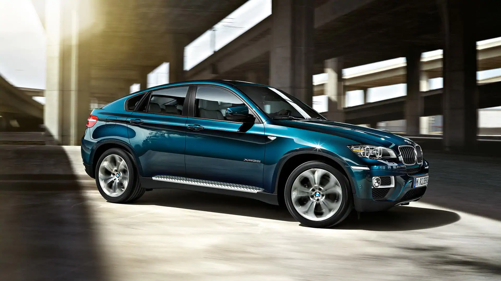
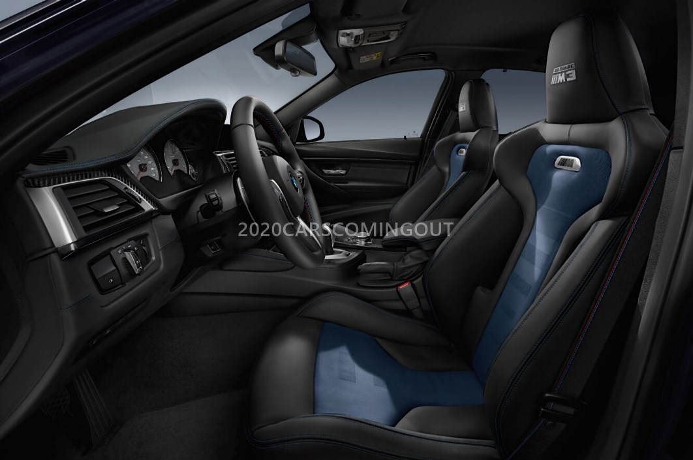
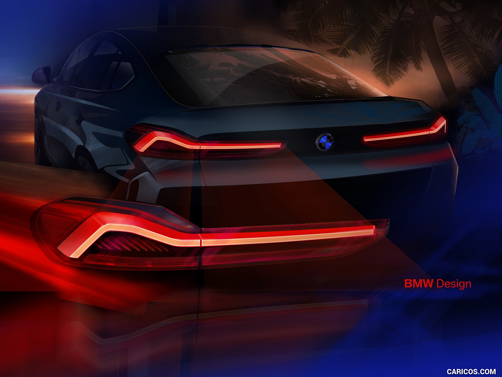
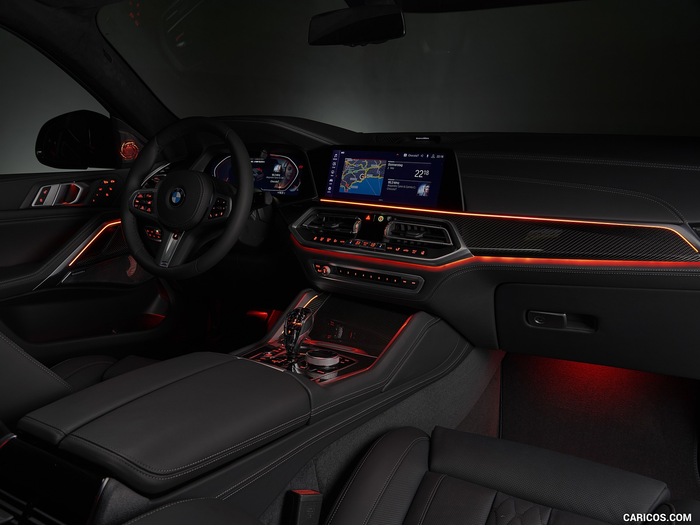

BMW X6
Uncompromisingly non-conformist � the new BMW X6 stands for provocative self-
assertiveness. Above all, this is visible in the extremely athletic body of the
vehicle along with the new, distinctive design language, which is displayed by
the supreme exclusivity and visionary technologies such as the impressive BMW
kidney grille �Iconic Glow�. All of this primarily points to one thing:
absolute dominance, which the new BMW X6 demonstrates quite matter-of-factly on
every route thanks to a powerful engine, precise suspension and features such as
the xOffroad package. Experience a previously unseen new way of exceeding
expectations with the new BMW X6.

The new BMW X6
polarises and
provokes. As the first
of its kind, the X6
stands more than
ever for an
independent and
self-confident
character.

The 2020 BMW X6 has made its global debut. The new
X6 features a massive kidney grille and other styling
elements which are in-tune with modern BMWs. It is
based on BMW�s Cluster Architecture(CLAR) platform
and is available in four variants: xDrive30d.
The top-spec M50i uses a 4.4-litre twin turbocharged
V8 making 523PS and a solid 750Nm of torque, while the
diesel M50d gets an inline six 3.0-litre turbocharged
unit that makes 400PS/760Nm. The xDrive30d uses a 3.0-litre
inline-six diesel producing 265PS/620Nm and the xDrive
40i usesa 3.0-litre inline six petrol motor churning out
340PS/450Nm. All the engines come mated tothe same 8-speed.
Some standout features include the four-zone automatic
climate control, thermoelectric cup holders, panorama
glass roof, ambient air interior fragrancing package
and the Bowers & Wilkins Diamond+ 3D surround sound system.


